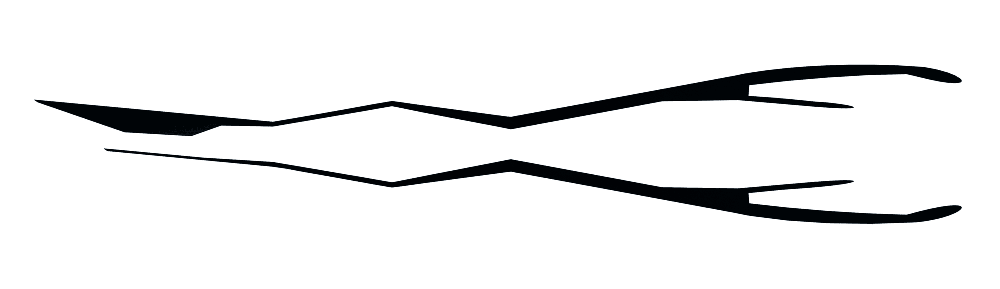
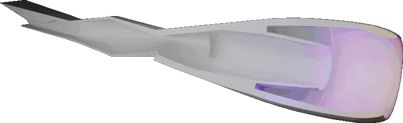

RDE Scramjet hypothetical design

What it is
A hypothetical hybrid engine — a Rotating Detonation Engine (RDE) combined with a ramjet — meant to take a vehicle from a standing start to hypersonic speed without any moving parts.
Back in the days of the first flight of the X-15 or the A-12 — the predecessor of the SR-71 Blackbird — the race for the fastest manned aircraft was dominated by either rocket engines or modified turbojets. Go even further back, and the German V-1 flying bomb used a pulsejet engine, which was extremely unreliable and often failed after just a few minutes of operation. This was largely due to the moving parts in the combustion chamber and other mechanical limitations.
The basic concept of using pulsating detonations for propulsion isn't inherently flawed, though. In recent years, a propulsion system known as the Rotating Detonation Engine (RDE) has been developed by NASA and other organizations, who found it could potentially be more efficient than conventional rocket engines, thanks to the pressure gain in detonation-based combustion. My proposed design uses the RDE during the initial phase of flight — from standstill up to approximately Mach 2.5, which is sufficient to transition into ramjet operation. This brings its own challenges, though: RDEs require already-compressed air to function, meaning some form of pre-compression is necessary, and cooling is a serious issue given the extreme temperatures generated during continuous detonations. Those challenges, and some possible ways around them, are what this project explores.
How a Rotating Detonation Engine works
RDEs are an evolution of the pulse detonation engine (PDE), which itself evolved from the earlier pulsejet engines used, for example, in the V-1. In a typical PDE, fuel and oxidizer are injected into the combustion chamber, mixed, and ignited by a spark plug. The resulting detonation creates a high-pressure wave that pushes exhaust out, producing thrust in discrete pulses.
An RDE works on a similar principle, but in a circular, annular (toroidal) combustion chamber. A continuous detonation wave travels around the ring, allowing for near-continuous thrust generation — combining the efficiency of detonation-based combustion with more stable operation than pulsed systems.
One of the biggest advantages of RDEs over conventional propulsion is thrust-to-weight ratio, which significantly exceeds that of typical turbojets or rockets — attractive for high-speed, high-performance applications like hypersonic flight. RDEs also have very few moving parts: unlike engines that rely on complex assemblies like turbines and compressors, an RDE operates with minimal mechanical components, which reduces weight and increases reliability under extreme conditions such as the dynamic pressure and temperature of hypersonic speeds.
My design
I started with the thought of an engine that can go from standstill to hypersonic and doesn't have any moving parts. That meant exploring several initial ideas, some of which were ultimately discarded due to technical limitations, before I realized RDEs are a genuinely viable option for aircraft. Below is a simple 3D concept.

The main problem with this design is that the RDE still needs a compressor to operate. One way around that is a short booster phase at the start — something like an afterburner on some jet aircraft today. At around Mach 0.5 the RDE would initiate, and with help from the compressor, bring the aircraft up to the minimum speed a steady ramjet needs to take over.
Open questions
This is just a starting point — there are several other ways an RDE and a ramjet could be integrated together, and plenty of room to keep developing the idea.